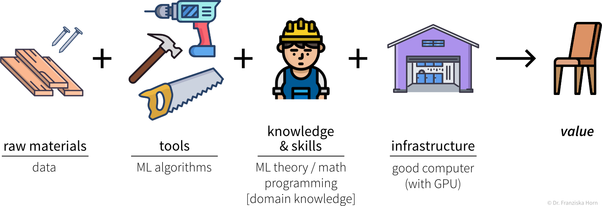
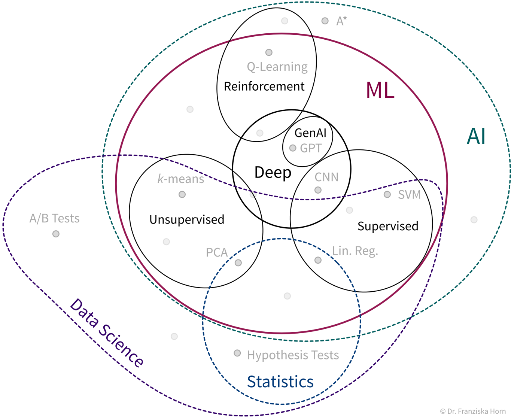
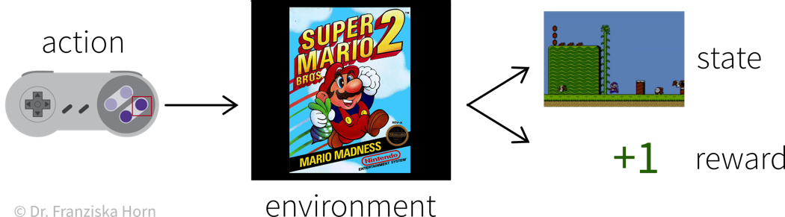
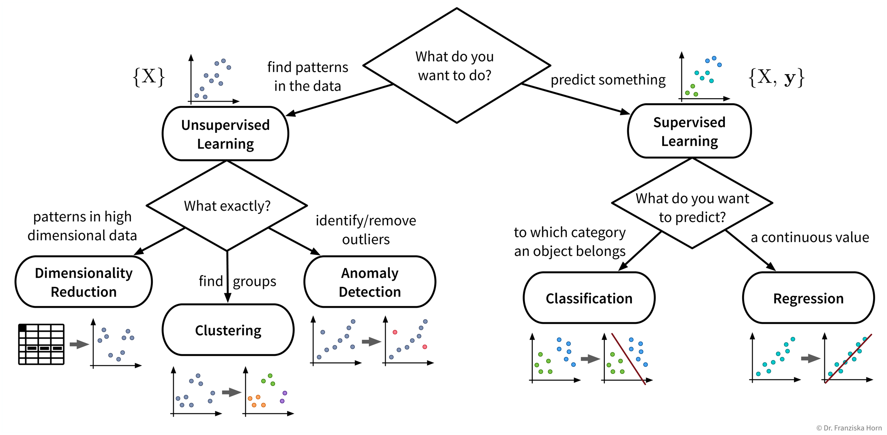
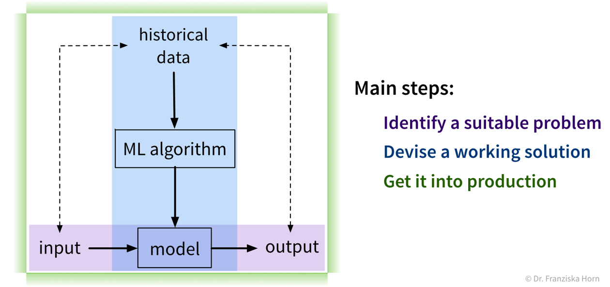
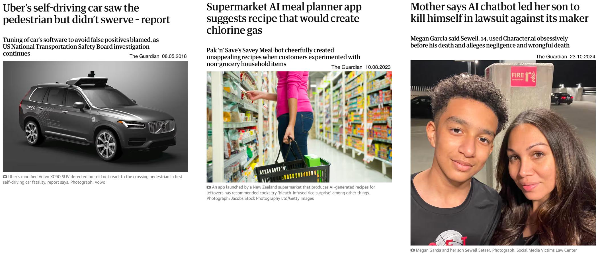
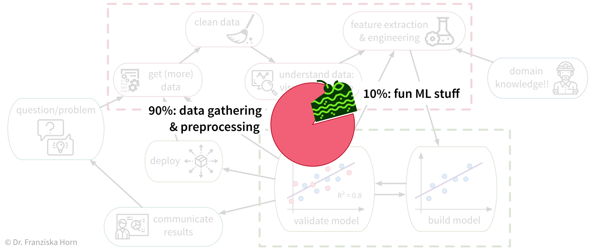

Grundlagen
Dieses Kapitel gibt eine allgemeine Einführung in das Thema Machine Learning (ML) und zeigt auf in welchen Bereichen der Einsatz von ML sinnvoll ist und welche Probleme man lieber mit einfacheren Mitteln lösen sollte.
Daten sind das neue Öl!?
Lass uns von vorne anfangen. Alles beginnt mit Daten. Wahrscheinlich hast du diese Behauptung schon einmal gehört: “Daten sind das neue Öl!”. Dies legt nahe, dass Daten wertvoll sind. Aber sind sie das?
Der Grund, warum Öl als wertvoll angesehen wird, liegt darin, dass wir wichtige Anwendungsfälle dafür haben: den Antrieb unserer Autos, die Beheizung unserer Häuser und die Herstellung von Kunststoffen oder Düngemitteln. Genauso verhält es sich auch mit Daten: sie sind nur so wertvoll wie das was wir aus ihnen machen. Wofür können wir also Daten verwenden?
Die wichtigsten Anwendungsfälle fallen in eine von zwei Kategorien:

Insights
Erkenntnisse können wir entweder durch kontinuierliches Monitoring (“Sind wir auf Kurs?”) oder eine tiefere Analyse (“Was läuft falsch?”) generieren.
In dem wir wichtige Variablen oder Key Performance Indicators (KPIs) in Berichten oder Dashboards visualisieren, machen wir den Status Quo transparenter und quantifizieren wie nah wir einem bestimmten Ziel schon gekommen sind. Wenn ein KPI weit ab von seinem Zielwert liegt, können wir mit einer explorativen Datenanalyse tiefer in die Daten eintauchen, um die Ursache des Problems zu identifizieren und Fragen wie diese zu beantworten:
- Warum erreichen wir unser Ziel nicht?
- Was sollen wir als nächstes tun?
Zufriedenstellende Antworten zu finden ist allerdings oft mehr Kunst als Wissenschaft üòâ ‚Äì mehr dazu im Kapitel Datenanalyse.
Automatisierung
Wie in den folgenden Unterkapiteln beschrieben, können Machine Learning Modelle dazu verwendet werden, um eine ‘Input → Output’ Aufgabe zu automatisieren, welche sonst ein (speziell geschulter) Mensch erledigen müsste. Diese Aufgaben fallen einem (entsprechend geschulten) Menschen in der Regel leicht:
- Übersetzen von Texten von einer Sprache in eine andere
- Produkte mit Kratzern aussortieren, wenn sie einen Kontrollpunkt am Fließband passieren
- Einem Freund Filme empfehlen
Die ML-Modelle müssen dafür mit einer großen Menge historischer Daten trainiert werden (z.B. Texte in beiden Sprachen, Bilder von Produkten mit und ohne Kratzer, Informationen über verschiedene Nutzer und welche Filme sie gesehen haben).
Die resultierende Software kann dann entweder verwendet werden, um die Aufgabe vollständig zu automatisieren, oder wir können einen Menschen dazwischen schalten, der eingreifen und die Vorschläge des Modells korrigieren kann.
Was ist ML?
Was genau ist nun dieses maschinelle Lernen, das bereits unser aller Leben verändert?
ML ist zunächst ein Forschungsgebiet im Bereich der theoretischen Informatik, an der Schnittstelle von Mathematik und Informatik:

Genauer gesagt ist maschinelles Lernen ein Überbegriff für Algorithmen, die Muster erkennen und Regeln aus Daten lernen.
Vereinfacht kann man sich einen Algorithmus als Strategie oder Rezept zur Lösung eines speziellen Problems vorstellen. Es gibt zum Beispiel effektive Algorithmen, um den kürzesten Weg zwischen zwei Städten zu finden (z.B. genutzt in den Navigationssystemen von Google Maps) oder um Planungsprobleme zu lösen wie z.B.: “Welche Aufgabe sollte zuerst erledigt werden und welche Aufgabe danach um alle Aufgaben vor ihrer Deadline zu schaffen unter Berücksichtigung eventueller Abhängigkeiten zwischen den Aufgaben.” Maschinelles Lernen befasst sich mit der Teilmenge von Algorithmen, die statistische Regelmäßigkeiten in einem Datensatz erkennen und nutzen, um bestimmte Ergebnisse zu erzielen.
Analog zu den Werkzeugen, mit denen man etwas in einem traditionellen Produktionsprozess herstellt, kann man sich ML-Algorithmen als Werkzeuge vorstellen, um Wert aus Daten zu generieren:

Um ML erfolgreich anzuwenden, sollte man sich einige wichtige Fragen stellen:
- Was könnte wertvoll sein? Dies kann beispielsweise ein neues Feature für ein existierendes Produkt sein, z.B. Face ID als neue Möglichkeit um ein Smartphone zu entsperren.
- Welche Daten werden benötigt? Einen Holzstuhl kann man nicht aus Stoff und Metall oder ein paar im Wald gefundenen Zweigen herstellen. Genauso benötigt man je nachdem, was man mit ML erreichen möchte, auch die richtigen Daten in ausreichender Qualität & Quantität um die Algorithmen überhaupt anwenden zu können. In vielen Anwendungsfällen ist dieser Teil besonders schwierig, da man die benötigten Daten oft nicht einfach kaufen kann, wie Holz im Baumarkt, sondern diese selbst sammeln – also quasi einen eigenen Wald anpflanzen muss, was einige Zeit dauern kann.
- Welcher ML-Algorithmus ist das richtige Werkzeug für diese Aufgabe? (Welche Kategorie von ML-Algorithmen generiert die Art von Output, die wir benötigen?)
- Verfüge ich bzw. meine Mitarbeiter über die notwendigen Fähigkeiten und genügend Rechenleistung, um das Vorhaben erfolgreich umzusetzen?
Die unterschiedlichen Algorithmen bilden unseren ML Werkzeugkasten:

ML Algorithmen lösen “Input → Output” Probleme
All diesen ML-Algorithmen aus unserem Werkzeugkasten ist gemein, dass sie “Input → Output” Probleme wie diese lösen:

Während in den obigen Beispielen ein (entsprechend geschulter) Mensch zur jeweiligen Eingabe in der Regel leicht die richtige Ausgabe erzeugt (z.B. kann sogar ein kleines Kind die Katze im ersten Bild erkennen), fällt es Menschen oft schwer zu beschreiben, wie sie zur richtigen Antwort gekommen sind (woran erkennt man, dass dies eine Katze und kein kleiner Hund ist? an den spitzen Ohren? den Schnurrhaaren?). Im Gegensatz dazu lernen ML-Algorithmen solche Regeln aus den gegebenen Beispieldaten.
ML vs. herkömmliche Software
Während man herkömmliche Software-Lösungen dazu verwenden kann, um Aufgaben zu automatisieren, bei denen eine vordefinierte Abfolge von Aktionen nach einigen festgeschriebenen Regeln ausgeführt wird (z.B. “Eine Tür soll sich öffnen, wenn ein Objekt eine Lichtschranke durchquert und sich 20 Sekunden später wieder schließen”), kann man mit maschinellem Lernen “Input → Output”-Aufgaben automatisieren, für die es sonst schwierig wäre, solche Regeln aufzustellen.
Die Qualitätskontrolle in einer Keks-Fabrik ist ein Beispiel für eine solche “Input (Keks) → Output (ok/fehlerhaft)”-Aufgabe: Während z.B. zerbrochene Kekse automatisch aussortiert werden könnten, indem man überprüft, dass jeder Keks etwa 15g wiegt, ist es schwierig, Regeln zu formulieren, die alle möglichen Produktionsfehler zuverlässig abfangen. Also müsste entweder ein Mensch die Produktionslinie beobachten, um z.B. zusätzlich verbrannte Kekse zu erkennen, oder man könnte Bilder von den Keksen machen und sie als Input für ein Machine Learning Modell verwenden, um die fehlerhaften Kekse zu erkennen:

Um dieses Problem mit ML zu lösen, muss zunächst ein großer Datensatz mit Fotos vieler guter, aber auch allerlei fehlerhafter Kekse zusammengestellt werden, inklusive der entsprechenden Annotationen, also einem Label für jedes Bild, ob es einen guten oder fehlerhaften Keks zeigt (aber nicht unbedingt die Art des Fehlers). Aus diesen Beispielen kann dann ein ML-Algorithmus lernen, zwischen guten und fehlerhaften Keksen zu unterscheiden.
Wann man ML (nicht) verwenden sollte
ML ist übertrieben, wenn:
- ein manuell definiertes Regelwerk oder ein mechanistisches (white box) Modell das Problem lösen kann. Wenn beispielsweise in unserer Keks-Fabrik das einzige Qualitätsproblem immer nur zerbrochene Kekse wären, dann würde die Regel “Keks-Gewicht muss zwischen 14-16g liegen” ausreichen, um alle fehlerhaften Kekse zuverlässig zu erkennen. Eine solche Regel ist außerdem einfacher zu implementieren, da nicht erst ein großer Datensatz gesammelt werden muss.
ML ist deine beste Chance, wenn:
- Menschen von sehr komplexen, hochdimensionalen Daten überfordert sind. Z.B. fällt es einem Menschen schwer, bei einer Excel-Tabelle mit hunderten von Spalten den Durchblick zu behalten. Wir können in so einem Meer von Zahlen oft keine Muster erkennen. Im ungünstigsten Fall gibt es tatsächlich keine Zusammenhänge in den Daten, da vielleicht nicht alle relevanten Faktoren gemessen wurden, aber wenn doch, wird ML die Zusammenhänge höchstwahrscheinlich finden.
ML hat großes Potenzial, wenn:
- eine exakte Simulation mit einem mechanistischen Modell zu lange dauert (dieses aber verwendet werden kann, um einen qualitativ hochwertigen Datensatz zu generieren). Z.B. wurde das in der Einleitung erwähnte AlphaFold-Modell, mit dem die 3D-Struktur eines Proteins anhand seiner Aminosäuresequenz vorhergesagt werden kann, auf den Daten trainiert, die das ursprüngliche Simulationsmodell zur Lösung dieser Aufgabe zuvor generiert hat, welches allerdings zu langsam ist, um auf eine große Anzahl von Proteinen angewendet zu werden.
- eine “einfache”, aber schwer zu erklärenden Aufgabe gelöst werden soll, die ein (geschulter) Mensch in ~1 Sekunde lösen kann, z.B. etwas auf einem Bild erkennen
⇒ Dadurch können repetitive Aufgaben automatisiert und Expertenwissen für alle zugänglich gemacht werden, wie z.B. beim eingangs gezeigten Diagnosemodell für diabetische Retinopathie von Google.
Aber: Erfolg hängt von der Datenqualität & -quantität ab!
→ Menschen können aus wenigen Beispielen viel besser verallgemeinern. Ein Arzt kann beispielsweise eine Krankheit auch dann noch leicht erkennen, wenn die Bilder z.B. mit einer älteren Maschine aufgenommen wurden. Ein ML-Modell muss für dieses geänderte Setup u.U. neu trainiert werden, wofür wieder viele zusätzliche Daten gesammelt werden müssen.
Verwende ML nur dann, wenn gelegentliche Fehler akzeptabel sind. ML-Modelle werden normalerweise mit von Menschen erstellten Daten trainiert, die anfällig für Rauschen sind, da selbst Experten bei bestimmten Fällen unterschiedlicher Meinung sein können. Außerdem müssen ML-Modelle möglicherweise extrapolieren und Vorhersagen für neue Datenpunkte machen, die sich von den Trainingsdaten unterscheiden, was zu falschen Ergebnissen führen kann. Um Fehler zu minimieren, kann es hilfreich sein, die Vorhersagen des ML-Modells gelegentlich von einem Menschen überprüfen zu lassen (“human in the loop”).
Wie “lernen” Maschinen?
Wie lösen ML-Algorithmen diese “Input → Output” Probleme, also wie erkennen sie Muster und lernen Regeln aus Daten?
ML-Algorithmen lassen sich nach ihrer Funktionsweise, d.h. wie sie lernen, weiter unterteilen. Diese Unterteilung ist inspiriert von der Art und Weise wie Menschen lernen:

Analog dazu können auch Maschinen nach diesen drei Strategien lernen:

Daten-Voraussetzungen für das Lernen mit diesen Strategien:
Unsupervised Learning: ein Datensatz mit Beispielen
Supervised Learning: ein Datensatz mit gelabelten Beispielen

Reinforcement Learning: eine (Simulations-) Umgebung, die, basierend auf den Aktionen des Agenten, Daten (Belohnung + neue Zustände) generiert

Aufgrund der Abhängigkeit von einer datenerzeugenden Umgebung ist Reinforcement Learning ein Sonderfall. Außerdem ist es derzeit noch sehr schwer, Reinforcement Learning Algorithmen zum Laufen zu bringen, weshalb sie hauptsächlich in der Forschung und weniger für praktische Anwendungen verwendet werden.
Supervised Learning
Supervised Learning ist die verbreitetste Art des maschinellen Lernens in heutigen Anwendungen.
Beim Supervised Learning möchten wir ein Modell (= eine mathematische Funktion) \(f(x)\) lernen, um den Zusammenhang zwischen einem oder mehreren Input(s) \(x\) (z.B. Produktionsbedingungen wie Temperatur, Material, etc.) und einem Output \(y\) (z.B. resultierende Produktqualität) zu beschreiben.
Dieses Modell kann dann verwendet werden, um Vorhersagen für neue Datenpunkte zu machen, also \(f(x') = y'\) für ein neues \(x'\) zu berechnen (z.B. für einen neuen Satz von Produktionsbedingungen vorhersagen, ob das Produkt von hoher Qualität sein wird, oder ob man den Vorgang lieber gleich abbrechen sollte).
Supervised Learning – kurz und knapp:

Features & Labels
Ein typisches Supervised Learning Problem wäre beispielsweise ein Produktionsprozess, bei dem wir vorhersagen möchten, ob ein unter bestimmten Produktionsbedingungen produziertes Teil Ausschuss ist. Hier beinhalten die gesammelten Daten für jedes produzierte Teil die Prozessbedingungen, unter denen es hergestellt wurde, und ob das resultierende Produkt in Ordnung oder Ausschuss war:


Im Supervised Learning werden die Features als Input (Eingabe) für das Modell verwendet, während die Labels die Zielvariable, d.h. der vorhergesagte Output (Ausgabe) darstellen. Im Allgemeinen sollten Features unabhängige Variablen sein (z.B. Einstellungen, die der Bediener nach Belieben wählen kann), während der Zielwert von diesen Eingaben abhängig sein sollte, damit wir ihn vorhersagen können.
Ein Modell aus Daten “lernen”
Ziel: Beschreibe den Zusammenhang zwischen Input(s) \(x\) und Output \(y\) mit einem Modell, d.h. einer mathematischen Funktion \(f(x)\)

Wähle eine Modell Klasse (= Struktur der Funktion): Annahme: Zusammenhang ist linear
→ lineares Regressionsmodell: \(y = f(x) = b + w\cdot x\)Definiere die Zielfunktion: Minimiere die Abweichung zwischen echtem & vorhergesagtem \(y\):
→ \(\min_{b,w} \sum_i (y_i - f(x_i))^2\)Finde die besten Modellparameter für die gegebenen Daten: d.h. löse das in Schritt 2 definierte Optimierungsproblem
⇒ \(f(x) = -2.7 + 5.2x\)
Die existierenden Supervised Learning Algorithmen unterscheiden sich in der Art des \(x \to y\) Zusammenhangs, den sie beschreiben können (z.B. linear oder nichtlinear) und welche Art von Zielfunktion (auch Fehlerfunktion genannt) sie minimieren. Die Aufgabe eines Data Scientists besteht darin, einen für den Datensatz passenden Modelltyp auszuwählen. Den Rest erledigt dann eine Optimierungsmethode, die Parameter für das Modells findet, welche die Zielfunktion des Modells minimieren, d.h. sodass der Vorhersagefehler des Modells auf den gegebenen Daten so klein wie möglich ist.
In diesem Buch werden die Begriffe “ML-Algorithmus” und “ML-Modell” meist synonym verwendet. Wenn man es aber genau nimmt, verarbeitet der Algorithmus die gegebenen Daten und lernt die Parameterwerte. Die gefundenen Parameter bestimmen das eigentliche Modell. Ein lineares Regressionsmodell wird beispielsweise durch seine Koeffizienten (d.h. die Parameter des Modells) definiert. Diese werden gefunden, in dem die Schritte des linearen Regressionsalgorithmus befolgt werden, also das Optimierungsproblem auf den gegebenen Daten gelöst wird.
Da geht noch mehr!

Prädiktive Analyse
Mit Supervised Learning Algorithmen können wir basierend auf historischen Daten ein Vorhersagemodell generieren, das Prognosen über zukünftige Szenarien anstellt um uns bei Planungen zu unterstützen.
Beispiel: Verkaufsprognosen verwenden, um Lagerbestände besser zu planen.
Interpretation Prädiktiver Modelle
Interpretiere das Vorhersagemodell und seine Prognosen, um die zugrundeliegenden Ursache-Wirkung Beziehungen des Prozesses besser zu verstehen.
Beispiel: Gegeben ein Modell, welches die Qualität eines Produkts aus den Produktionsbedingungen vorhersagt, verstehe welche Faktoren dazu führen dass Produkte von geringerer Qualität sind.
Was-wäre-wenn Analyse & Optimierung
Verwende ein Vorhersagemodell für eine Was-wäre-wenn-Vorhersage, um zu untersuchen, wie ein System auf unterschiedliche Bedingungen reagieren könnte (aber Vorsicht!).
Beispiel: Gegeben ein Modell, welches die verbleibende Lebenszeit für eine Maschinenkomponente aus den Prozessbedingungen vorhersagt, wie schnell würde diese Komponente unter anderen Prozessbedingungen verschleißen?
Wenn wir noch einen Schritt weiter gehen wollen, können wir auch automatisch verschiedene Inputs mit dem Vorhersagemodell in einer Optimierungsschleife bewerten, um systematisch optimale Einstellungen zu finden.
Beispiel: Gegeben ein Modell, welches die Qualität eines Produkts aus den Produktionsbedingungen vorhersagt, bestimme automatisch die besten Produktionseinstellungen für einen neuen Rohstofftyp.
ML Anwendungsfälle
ML-Algorithmen können auf Input Daten in verschiedensten Formaten angewendet werden…
Strukturierte vs. Unstrukturierte Daten
Daten können in verschiedenen Formaten vorliegen und während einige Datentypen evtl. zusätzliche Verarbeitungsschritte erfordern, können ML-Algorithmen im Prinzip mit jeder Art von Daten arbeiten.

…aber unser Ziel, also der gewünschte Output, bestimmt welche Art von Algorithmus wir für das Problem verwenden sollten:

Supervised Learning Modelle werden verwendet, um unbekannte Werte zu schätzen (estimate) (z.B. vorhersagen, ob ein Produkt fehlerhaft ist, wenn es unter bestimmten Bedingungen produziert wird): Regression sagt kontinuierliche Werte voraus (z.B. Anzahl der Nutzer, Preis etc.), während Klassifikation diskrete Labels basierend auf den Inputdaten zuweist (z.B. kann ein Tier in einem Bild entweder eine Katze oder ein Hund sein, aber nichts dazwischen).
Recommender Systems und Information Retrieval-Algorithmen können Artikel von Interesse empfehlen (recommend), wie Dokumente, Songs oder Filme, basierend auf den Präferenzen eines Nutzers oder den Artikeln, mit denen sie interagiert haben.
Die vielseitigsten Modelle sind Generative AI und Deep Learning, die hauptsächlich unstrukturierte Daten nutzen. Sie können vielfältige Outputs erzeugen (generate) – wie Bilder, Texte (z.B. für maschinelle Übersetzung) oder Musik – basierend auf einem gegebenen Prompt.
Schließlich werden Reinforcement Learning-Algorithmen verwendet, um Prozesse zu planen und zu steuern (plan and control), indem optimale Aktionssequenzen unter spezifischen Umweltbedingungen bestimmt werden.
Einige Beispiele für ‘Input → Output’ Aufgaben und welche Art von ML-Algorithmus verwendet werden kann, um sie zu lösen:
| Input \(X\) | Output \(Y\) | ML-Algorithmus Kategorie |
|---|---|---|
| Fragebogenantworten | Kundensegmentierung | Clustering |
| Sensormessungen | alles normal? | Anomalieerkennung |
| Vergangene Nutzung einer Maschine | Restlebensdauer | Regression |
| Spam (ja/nein) | Klassifikation (binär) | |
| Bild | welches Tier? | Klassifikation (mehrere Klassen) |
| Bisherige Einkäufe des Nutzers | Produktvorschläge | Empfehlungssysteme |
| Suchanfrage | relevante Dokumente | Information Retrieval |
| Audio | Text | Spracherkennung |
| Text auf Englisch | Text auf Französisch | Maschinelle Übersetzung |
Zusammengefasst (siehe auch: Übersichtstabelle als PDF):
Existierende ML-Lösungen & entsprechende Outputs (für einen Datenpunkt):
- Dimensionsreduktion: (normalerweise) 2D-Koordinaten (um den Datensatz zu visualisieren)
- Ausreißer-/Anomalieerkennung: Anomalie-Score (normalerweise ein Wert zwischen 0 und 1, der angibt, inwiefern dieser Punkt von der Norm abweicht)
- Clustering: Cluster-Index (eine Zahl zwischen 0 und k-1, die angibt, zu welchem der k Cluster ein Datenpunkt gehört (oder -1 für Ausreißer))
- Regression: ein kontinuierlicher Wert (eine numerischer Größe, die vorhergesagt werden soll)
- Klassifikation: ein diskreter Wert (eine von mehreren sich gegenseitig ausschließenden Kategorien)
- Generative AI: unstrukturierte Outputs wie Text oder Bild (z.B. Spracherkennung, maschinelle Übersetzung, Bild Generierung oder Neural Style Transfer)
- Empfehlungssysteme & Information Retrieval: Rangliste einer Menge von Elementen (Empfehlungssysteme ordnen beispielsweise die Produkte nach Relevanz für den jeweiligen Nutzer; Information Retrieval Systeme sortieren Elemente nach ihrer Ähnlichkeit zu einer gegebenen Suchanfrage)
- Reinforcement Learning: eine Sequenz von Aktionen (abhängig vom Zustand in dem sich der Agent befindet)
Beginnen wir mit einem detaillierteren Blick auf die verschiedenen Unsupervised und Supervised Learning Algorithmen und wie sie uns helfen können:

Auch wenn unser eigentliches Ziel darin besteht, etwas vorherzusagen (also Supervised Learning zu verwenden), kann es dennoch sehr hilfreich sein, zunächst Unsupervised Learning Algorithmen anzuwenden, um den Datensatz besser zu verstehen. Beispielsweise kann man die Daten im Vorfeld mit Dimensionsreduktionsmethoden visualisieren, um alle Datenpunkte und ihre Vielfalt auf einen Blick zu sehen. Anschließend kann man den Datensatz bereinigen, in dem man Ausreißer identifiziert. Bei einem Klassifikationsproblem ist es häufig sinnvoll, die Datenpunkte zuerst zu clustern, um zu überprüfen, in wie weit die angegebenen Klassenlabels mit den natürlich vorkommenden Gruppen in den Daten übereinstimmen. Beispielsweise sieht man dann vielleicht, dass man das Problem vereinfachen kann, in dem man zwei sehr ähnliche Klassen kombiniert.
Gleicher Datensatz, unterschiedliche Anwendungsfälle
Wir veranschaulichen den Nutzen der fünf verschiedenen Arten von Unsupervised und Supervised Learning Algorithmen in dem wir sie auf diesen Beispieldatensatz anwenden:
| m2 | # Schlafz. | # Bad | Renoviert | … | Preis | Verkauft |
|---|---|---|---|---|---|---|
| 125 | 4 | 2 | 2000 | … | 500k | 1 |
| 75 | 2 | 1 | 1990 | … | 350k | 1 |
| 150 | 6 | 2 | 2010 | … | 750k | 0 |
| … | … | … | … | … | … | … |
| 35 | 5 | 2 | 1999 | … | 620k | 0 |
| 65 | 3 | 1 | 2015 | … | 220k | 1 |
| 100 | 3 | 1 | 2003 | … | 450k | 0 |
Dimensionsreduktion
Anwendungsfälle:
- Erstellen einer 2D-Visualisierung, um den Datensatz im Ganzen zu überblicken, wobei wir oft bereits beim Draufschauen Muster identifizieren können, wie Datenpunkte, die zusammen gruppiert werden können (Cluster) oder die nicht ins Bild passen (Ausreißer)
- Rauschunterdrückung und/oder Feature-Engineering als Datenvorverarbeitungsschritt zur Verbesserung der Ergebnisse eines Vorhersagemodells
Beispiel Unsupervised Learning: Dimensionsreduktion
Ziel: Datensatz visualisieren

Mögliche Herausforderungen:
- die Transformation der Daten mit Dimensionsreduktionsmethoden konstruiert neue Features als (nicht)lineare Kombination der ursprünglichen Features, was die Interpretation der nachfolgenden Analyseergebnisse erschwert
Anomalieerkennung
Anwendungsfälle:
- Bereinigung der Daten, z.B. durch Entfernen von Datenpunkten mit falsch eingegebenen Werten, als Datenvorverarbeitungsschritt zur Verbesserung der Ergebnisse eines Vorhersagemodells
- Warnung für Anomalien einrichten, zum Beispiel:
- Betrugserkennung: Identifizierung betrügerischer Kreditkartentransaktionen im E-Commerce
- Überwachen einer Maschine, um zu erkennen, wenn etwas Außergewöhnliches passiert oder die Maschine möglicherweise gewartet werden muss
Beispiel Unsupervised Learning: Anomalieerkennung
Ziel: Ausreißer im Datensatz finden

Mögliche Herausforderungen:
- du solltest immer einen guten Grund haben, Datenpunkte weg zu lassen – Ausreißer sind selten zufällig, manchmal sind dies interessante Randfälle, die nicht ignoriert werden sollten
Clustering
Anwendungsfälle:
- Identifizieren von Gruppen verwandter Datenpunkte, zum Beispiel:
- Kundensegmentierung für gezielte Marketingkampagnen
Beispiel Unsupervised Learning: Clustering
Ziel: Natürlich vorkommende Gruppen im Datensatz finden

Mögliche Herausforderungen:
- keine Ground Truth: Modell- und Parameterselektion nicht trivial → die Algorithmen werden immer etwas finden, aber ob dies sinnvoll ist (d.h. was die identifizierten Muster bedeuten), kann ein Menschen in einem Nachbearbeitungsschritt bestimmen
- viele der Algorithmen beruhen auf Ähnlichkeiten oder Distanzen zwischen Datenpunkten, und es kann schwierig sein, dafür ein geeignetes Maß zu definieren oder im Voraus zu wissen, welche Merkmale verglichen werden sollten (z.B. was macht zwei Kunden ähnlich?)
Unsupervised Learning hat keine zugrundeliegende Wahrheit
Bei Unsupervised Learning Problemen sollte uns bewusst sein, dass es keine richtigen oder falschen Antworten gibt. Unsupervised Learning Algorithmen erkennen lediglich Muster in den Daten. Das Ergebnis kann für uns Menschen sinnvoll sein oder auch nicht.
Ein Beispiel: Im Bereich Unsupervised Learning gibt es eine Reihe verschiedener Algorithmen, die Datenpunkte in Cluster gruppieren. Dabei arbeitet jeder Algorithmus nach einer etwas anderen Strategie und bewertet unterschiedlich, ab wann zwei Punkte ähnlich genug sind, dass sie in denselben Cluster eingeordnet werden können.

Es ist unsere Aufgabe, die Ergebnisse eines Unsupervised Learning Algorithmus zu untersuchen und zu verstehen. Entsprechen die Resultate nicht unseren Erwartungen, spricht nichts dagegen, einen anderen Algorithmus auszuprobieren.
Regression & Klassifikation
Anwendungsfälle:
- Lerne ein Modell, um eine Input-Output-Beziehung zu beschreiben und Vorhersagen für neue Datenpunkte zu treffen, zum Beispiel:
- vor der Produktion vorhersagen, ob ein unter den vorgeschlagenen Prozessbedingungen hergestelltes Produkt von hoher Qualität oder Ressourcenverschwendung sein wird
- Churn Prediction: Erkenne Kunden, die kurz davor stehen, ihren Vertrag zu kündigen (oder Mitarbeiter, die kurz davor stehen zu kündigen), damit du sie kontaktieren und überzeugen kannst zu bleiben
- Preisoptimierung: Bestimme den optimalen Preis für ein Produkt (oft für dynamische Preisgestaltung verwendet, z.B. um Preise basierend auf dem Gerät anzupassen, das ein Kunde verwendet, wenn er auf eine Website zugreift, wie z.B. ein neues iPhone gegenüber einem alten Android-Handy)
- Predictive Maintenance: Sage voraus, wie lange ein Maschinenbauteil halten wird
- Umsatzprognosen: Sag den Umsatz in den kommenden Wochen und den erforderlichen Lagerbestand voraus, um die Nachfrage zu befriedigen
Beispiel Supervised Learning: Klassifikation
Ziel: Vorhersage eines diskreten Werts für jeden Datenpunkt

Beispiel Supervised Learning: Regression
Ziel: Vorhersage eines kontinuierlichen Werts für jeden Datenpunkt

Mögliche Herausforderungen:
- Erfolg ungewiss: die Anwendung der Algorithmen ist zwar relativ einfach, aber es ist schwierig, im Voraus festzustellen, ob überhaupt ein Zusammenhang zwischen den gemessenen Inputs und Outputs besteht (→ Achtung: Garbage in, Garbage out!)
- angemessene Definition des Ergebnisses/Ziels/KPI, das modelliert werden soll, d.h. was bedeutet es eigentlich, dass ein Prozess gut läuft, und wie könnten externe Faktoren diese Definition beeinflussen (können wir z.B. die gleiche Leistung in einem außergewöhnlich heißen Sommertag erwarten?)
- wichtige Inputs fehlen, z.B. wenn es andere Einflussfaktoren gibt, die wir nicht berücksichtigt haben oder nicht messen konnten, wodurch nicht die gesamte Varianz der Zielgröße erklärt werden kann
- viele möglicherweise irrelevante Inputs, die eine sorgfältige Feature Selektion erfordern, um Scheinkorrelationen zu vermeiden, die zu falschen “Was-wäre-wenn”-Prognosen führen würden, da die wahre kausale Beziehung zwischen den Inputs und Outputs nicht erfasst wird
- oft sehr zeitintensive Datenvorverarbeitung notwendig, z.B. bei der Zusammenführung von Daten aus unterschiedlichen Quellen und manuellem Feature Engineering
Deep Learning & Generative AI
Anwendungsfälle:
- Automatisierung langwieriger, repetitiver Aufgaben, die sonst ein Menschen erledigt würde, z.B. (siehe auch ML ist überall!):
- Textklassifizierung (z.B. Spam / Hate Speech / Fake News erkennen; Kundensupportanfragen an die passende Abteilung weiterleiten)
- Sentimentanalyse (Teilaufgabe der Textklassifikation: Positive oder negative Texte erkennen, z.B. um Produktbewertungen oder das, was Social-Media-Nutzer über ein Unternehmen sagen, zu überwachen)
- Spracherkennung (z.B. diktierte Notizen transkribieren oder Videos mit Untertiteln versehen)
- maschinelle Übersetzung (Texte von einer Sprache in eine andere übersetzen)
- Bildklassifizierung / Objekterkennung (z.B. Identifizierung problematischer Inhalte (wie Kinderpornografie) oder Erkennung von Straßenschildern und Fußgängern beim autonomen Fahren)
- Bildbeschreibungen generieren (z.B. um das Online-Erlebnis für Menschen mit Sehbehinderung zu verbessern)
- Predictive Typing (z.B. bei der Texteingabe auf dem Smartphone mögliche nächste Wörter vorschlagen)
- Datengenerierung (z.B. neue Fotos/Bilder von bestimmten Objekten oder Szenen generieren)
- Style Transfer (ein Bild in einen anderen Stil zeigen, z.B. Fotos wie van Gogh-Gemälde aussehen lassen)
- einzelne Quellen eines Audiosignals trennen (z.B. einen Song entmischen, d.h. Gesang und Instrumente in einzelne Spuren trennen)
- klassische Simulationsmodelle durch ML Modelle ersetzen: da exakte Simulationsmodelle oft langsam sind, kann die Berechnung für neue Datenpunkte beschleunigt werden, indem die Ergebnisse stattdessen mit einem ML-Modell vorhergesagt werden, z.B.:
- AlphaFold: 3D-Proteinstruktur aus Aminosäuresequenz generieren (zur Erleichterung der Arzneimittelentwicklung)
- SchNet: Energie und andere Eigenschaften von Molekülen anhand ihrer Atomkonfiguration vorhersagen (um die Materialforschung zu beschleunigen)
Mögliche Herausforderungen:
- Auswählen einer geeigneten neuronalen Netzarchitektur und dafür sorgen, dass das Modell gute Vorhersagen generiert; insbesondere beim Ersetzen traditioneller Simulationsmodelle ist es häufig erforderlich, eine völlig neue Art von neuronaler Netzarchitektur zu entwickeln, die speziell für diese Aufgabe und Inputs/Outputs ausgelegt ist, was viel ML- und Domänenwissen, Intuition und Kreativität erfordert
- Rechenressourcen (trainiere kein neuronales Netz ohne GPU!)
- Datenqualität und -quantität: es werden viele konsistent (von Menschen) gelabelte Daten benötigt
KI-Agenten: Gen AI + “Tools” (externe Funktionalität)
Generative KI—oder genauer gesagt Large Language Models (LLMs)—werden typischerweise in einem einfachen Loop verwendet: Man sendet einen Prompt und das Modell antwortet basierend auf Mustern, die es während des Trainings gelernt hat.
KI-Agenten bauen auf LLMs auf, indem sie dieses grundlegende Setup um den Zugriff auf Tools erweitern, also externe Funktionalität, die dem Modell zur Verfügung gestellt wird. Im einfachsten Fall könnte ein Tool dem KI-Agenten ermöglichen, das Internet zu durchsuchen; fortgeschrittenere Tools könnten auf Datenbanken zugreifen, Code ausführen oder Dateien manipulieren.

Der Agent muss explizit darüber informiert werden, welche Tools verfügbar sind—im Wesentlichen durch eine Liste von Tool-Namen mit Beschreibungen und Nutzungsanweisungen (z.B., dass Suchbegriffe für die Internetsuche erforderlich sind). Man kann auch eigene Tools implementieren, etwa um dem LLM Zugriff auf die Unternehmensdatenbank zu geben, um Lagerbestände zu durchsuchen. Während bereits viel mit Tools erreicht werden kann, die nur Lesezugriff haben, ist noch mehr möglich (im Guten wie im Schlechten), wenn man dem Agenten Schreibzugriff gibt, etwa die Option, Dateien auf dem Computer zu manipulieren. Dies ist beispielsweise für Coding-Agenten notwendig, die Code-Dateien erstellen und modifizieren, um neue Funktionalität zu programmieren.
Ein wesentliches Merkmal von KI-Agenten ist ihre Fähigkeit, autonom zu handeln durch einen internen Loop, der weiterarbeitet und Tools aufruft, bis das LLM entscheidet, dass die Aufgabe abgeschlossen ist. Dies ermöglicht mehrstufige Workflows wie das Durchsuchen verschiedener Informationsquellen, das Treffen von Zwischenentscheidungen und das Iterieren basierend auf Ergebnissen. Beispielsweise bearbeitet ein Coding-Agent Skripte, führt Tests aus, behebt Fehler wenn Tests fehlschlagen und wiederholt dies, bis alles funktioniert.
KI-Agenten haben jedoch auch wichtige Einschränkungen, die berücksichtigt werden müssen:
- Chat ist nicht immer das richtige Interface. Manche Aufgaben benötigen reichhaltige UIs (z.B. Sitzplatzauswahl beim Ticketkauf). Solche Interaktionen in Text zu kodieren kann umständlich und fehleranfällig sein.
- LLM-Outputs können immer noch falsch sein. Selbst bei Nutzung externer, vermeintlich zuverlässiger Quellen ist menschliche Verifikation weiterhin notwendig.
- Schreibzugriff erhöht das Risiko. Fehler sind gravierender, wenn Agenten Dateien oder Systeme modifizieren können. Guardrails sind nötig, um destruktive Aktionen zu verhindern (z.B. Löschen wichtiger Daten).
- Kosten- und Missbrauchsüberlegungen: LLMs werden meist über kostenpflichtige APIs (z.B. OpenAI) angesprochen und jeder Agenten-Schritt verursacht Kosten. Bei Zugriff durch externe Nutzer ist oft Rate Limiting notwendig, um Missbrauch zu verhindern.
Information Retrieval
Anwendungsfälle:
- Verbesserte Suchergebnisse durch Identifizierung ähnlicher Artikel, zum Beispiel:
- bei einer Suchanfrage passende Dokumente / Websites zurückgeben
- gegeben einem Film, den der Nutzer gerade anschaut, ähnliche Filme anzeigen (z.B. gleiches Genre, gleicher Regisseur usw.)
Mögliche Herausforderungen:
- Qualität der Ergebnisse hängt stark von der gewählten Ähnlichkeitsmetrik ab; die Identifizierung semantisch verwandter Elemente ist derzeit für einige Datentypen (z.B. Bilder) schwieriger als für andere (z.B. Text)
Empfehlungssysteme
Anwendungsfälle:
- personalisierte Vorschläge: gegeben einer Instanz (z.B. Benutzer, Proteinstruktur) die relevantesten Elemente identifizieren (z.B. Film, Arzneimittelzusammensetzung), zum Beispiel:
- einem Nutzer Filme vorschlagen, die anderen Nutzern mit ähnlichem Geschmack ebenfalls gefallen haben
- Molekülstrukturen empfehlen, die in eine, für eine bestimmte Krankheit relevante, Proteinstruktur passen könnte
Mögliche Herausforderungen:
- wenig / unvollständige Daten, z.B. mögen verschiedene Nutzer denselben Artikel aus unterschiedlichen Gründen und es ist unklar, ob z.B. ein Nutzer einen Film nicht angesehen hat, weil er sich nicht dafür interessiert oder weil er ihn einfach noch nicht gefunden hat
Reinforcement Learning
Anwendungsfälle:
- Ermittlung einer optimalen Handlungsabfolge bei wechselnden Umgebungsbedingungen, z.B.:
- Virtueller Agent, der ein (Video-)Spiel spielt
- Roboter mit komplexen Bewegungsmustern, z.B. Aufnehmen unterschiedlich geformter Gegenstände aus einer Kiste
⇒ Anders als bei der regulären Optimierung, wo eine optimale Eingabe für einen spezifischen externen Zustand bestimmt wird, versucht hier ein “Agent” (= der RL-Algorithmus) eine optimale Reihenfolge von Eingaben zu finden, um die kumulative Belohnung über mehrere Schritte zu maximieren. Dabei kann zwischen einer Handlung und der dazugehörigen Belohnung eine erhebliche Zeitverzögerung liegen (z.B. wenn in einem Videospiel zu Beginn eines Levels ein Schlüssel gefunden werden muss, aber die Tür, die damit geöffnet werden kann, erst einige Frames später kommt).
Mögliche Herausforderungen:
- erfordert normalerweise eine Simulationsumgebung, in der der Agent “angelernt” wird, bevor er anfängt, in der realen Welt zu handeln. Die Entwicklung eines exakten Simulationsmodells ist allerdings nicht einfach und der Agent wird alle Bugs ausnutzen, wenn dies zu höheren Belohnungen führt
- es kann schwierig sein, eine klare Belohnungsfunktion zu definieren, die optimiert werden soll (“Imitation Learning” ist dabei oft einfacher, wobei der Agent stattdessen versucht, die Entscheidungen eines Menschen in einer bestimmten Situation nachzuahmen)
- lange Verzögerungen zwischen kritischen Aktionen und der dazugehörigen Belohnung erschweren das lernen korrekter Assoziationen
- der Agent generiert seine eigenen Daten: Wenn er mit einer schlechten Policy startet, wird es schwierig, dieser zu entkommen (z.B. wenn der Agent in einem Videospiel immer in eine Lücke fällt, anstatt darüber zu springen, sieht er nie die Belohnung, die auf der anderen Seite wartet und lernt daher nicht, dass es von Vorteil wäre, über die Lücke zu springen)
Andere
ML-Algorithmen werden anhand des Outputs kategorisiert, den sie für eine Eingabe generieren. Wenn man ein ‘Input → Output’-Problem mit einem anderen als den oben aufgeführten Outputs lösen möchte, wird das wahrscheinlich auf ein mehrjähriges Forschungsprojekt hinauslaufen – wenn das Problem überhaupt mit ML gelöst werden kann!
Um komplexe Probleme zu lösen, benötigt man möglicherweise mehrere Algorithmen
Beispiel: virtueller Assistent (z.B. Siri oder Alexa): “Hey <Sprachassistent>, erzähl mir einen Witz!” → ein zufälliger Witz
Das sieht zwar zunächst wie ein Input-Output-Problem aus, es direkt zu lösen wäre allerdings sehr schwierig und ineffizient. Stattdessen zerlegen wir das Problem in kleinere Teilaufgaben, die mit bestehenden Algorithmen gelöst werden können:
- Triggerwort Erkennung:
Audio → “Hey <Sprachassistent>” (ja/nein)? - Spracherkennung:
Audio → Text - Klassifizierung der Absicht:
Text → (Witz/Timer/Wettervorhersage/…)? - Führe spezifisches Programm aus (z.B. wähle zufälligen Witz aus)
- Sprachgenerierung:
Text → Audio
Zunächst muss der Smart Speaker wissen, ob er mit einem bestimmten Triggerwort (z.B. “Hey Siri”) angesprochen wurde. Dies ist eine einfache binäre Klassifikation (ja/nein), die normalerweise auf dem Gerät selbst ausgeführt wird, da wir nicht möchten, dass alles was wir sagen permanent in die Cloud gestreamt wird. Als nächstes werden die nach dem Triggerwort gesprochenen Wörter in Text übersetzt. Text ist einfacher zu handhaben, da beispielsweise Variationen aufgrund unterschiedlicher Akzente entfernt werden. Anhand dieses Textes wird die Absicht des Nutzers erkannt, also welche der verschiedenen Funktionalitäten des virtuellen Assistenten genutzt werden soll (z.B. Witz erzählen, Musik abspielen, Wecker stellen etc.). Dies ist ein Multiclass-Klassifikationsproblem. Zur Ausführung des Befehls wird kein ML benötigt, sondern ein normales, aufgabenspezifisches Programm, das als App auf dem Gerät installiert ist, z.B. wird ein Witz aus einer Datenbank ausgewählt oder ein Timer gesetzt usw.. Anschließend muss der Output des ausgeführten Programms wieder in ein Audiosignal umgewandelt werden. Ein ML-Modell kann dabei helfen, flüssig gesprochenen Text zu erzeugen – und in naher Zukunft vielleicht auch mit der Stimme von Morgan Freeman oder einer anderen berühmten Person, wie bei “Deep Fake”-Anwendungen.
⇒ Generell sollte man zunächst darüber nachzudenken, ob man ein Problem in leichter zu lösende Teilprobleme zerlegen kann, da es dafür oft schon große Datensätze oder sogar fertige Modelle gibt. Ein Modell für Spracherkennung kann beispielsweise zusätzlich auf Hörbüchern und transkribierten politische Reden trainiert werden, nicht nur auf den Daten, die von den Sprachassistent-Nutzern gesammelt wurden.
Wenn ein ML-Modell als Input den Output eines anderen ML-Modells erhält, bedeutet dies, dass wir, sobald wir eine neue Version des ersten ML-Modells verwenden, auch die folgenden Modelle neu trainieren sollten, da diese Modelle dann evtl. leicht andere Inputs erhalten, d.h. wir es mit einem Daten Drift zu tun haben.
Mit ML Probleme lösen
Das Lösen von “Input → Output”-Problemen mit ML erfordert drei Hauptschritte:

1. Identifiziere ein Problem
Der erste (und wohl wichtigste) Schritt besteht darin, zu identifizieren, wo maschinelles Lernen überhaupt eingesetzt werden kann (und sollte).

Schritte zur Identifizierung eines potenziellen ML-Projekts
Erstelle ein Prozessdiagramm: Welche Schritte werden in einem Geschäftsprozess ausgeführt und welche Daten werden wo gesammelt (Material- & Informationsfluss). Zum Beispiel in einem Produktionsprozess, bei dem einige der produzierten Teile fehlerhaft sind:

Identifiziere Teile des Prozesses, die entweder mit ML automatisiert werden könnten (z.B. einfache, sich wiederholende Aufgaben, die sonst von Menschen erledigt werden) oder die auf andere Weise durch eine Analyse von Daten verbessert werden könnten (z.B. um die Ursachen eines Problems zu verstehen, die Planung mit Was-wäre-wenn-Simulationen zu verbessern, oder die Ressourcennutzung zu optimieren):

Die erste Idee besteht darin, die bisher von einem Menschen durchgeführte Qualitätsprüfung zu automatisieren: Da der Mensch die Defekte in den aufgenommenen Produktbildern leicht erkennen kann, sollte ein ML-Modell dies auch schaffen. Die nächste Idee besteht darin, anhand der Zusammensetzung der Rohstoffe und der gegebenen Prozessbedingungen vor der Herstellung vorherzusagen, ob ein Produkt fehlerhaft sein wird oder nicht: Der Erfolg ist hier unklar, da eine menschliche Expertin nicht von vorne herein abschätzen kann, ob alle relevanten Informationen dafür in diesen Daten enthalten sind. Aber dennoch wäre es einen Versuch wert, da man dadurch viele Ressourcen sparen könnte. Während das endgültige ML-Modell, welches das Input-Output-Problem löst, als Software im laufenden Betrieb eingesetzt werden kann, kann ein Data Scientist zusätzlich die Ergebnisse analysieren und das Modell interpretieren und somit Erkenntnisse gewinnen und Handlungsempfehlungen aussprechen. Priorisieren: Welches Projekt hätte eine große Wirkung und gleichzeitig gute Erfolgsaussichten, hätte also einen hohen Return on Investment (ROI)? Als Beispiel: Die Verwendung von ML zur Automatisierung einer einfachen Aufgabe ist aus technischer Sicht eine vergleichsweise risikoarme Investition, kann jedoch dazu führen, dass einige Fließbandarbeiter ihre Jobs verlieren. Andererseits könnten durch die Ermittlung der Ursachen, warum in einem Produktionsprozess 10% Ausschuss produziert werden, Millionen eingespart werden. Allerdings ist nicht vorhersehbar, ob eine solche Analyse tatsächlich nützliche Ergebnisse liefert, da die gesammelten Daten zu den Prozessbedingungen möglicherweise nicht alle erforderlichen Informationen enthalten.
Projektideen werden am besten in einem kollaborativen Workshop mit Data Scientists, Fachexperten und Entwicklern identifiziert:

ML Projekt Checkliste
Motivation
Welches Problem möchtest du lösen?
Machine Learning kann dir in verschiedenen Situationen helfen, z.B. indem es Erkenntnisse aus großen Mengen (möglicherweise unstrukturierter) Daten generiert, Entscheidungsfindungs- und Planungsprozesse durch Vorhersagen über zukünftige Ereignisse verbessert, oder mühsame Aufgaben automatisiert, die sonst menschliche Experten erfordern.
Wo läuft etwas ineffizient, was durch eine effektivere Nutzung von Daten verbessert werden könnte? Du könntest zum Beispiel nach Möglichkeiten suchen, verschwendete Ressourcen/Zeit/Kosten zu reduzieren oder den Umsatz/die Kundenzufriedenheit/usw. zu steigern.
Um systematisch Probleme oder Verbesserungsmöglichkeiten zu erkennen, kann es auch helfen, ein Prozessdiagramm oder eine Customer Journey Map zu erstellen.Auf welche Art und Weise würde dies Wert für eure Organisation generieren?
Wie könnte eure Organisation damit Geld verdienen oder Kosten senken?- Könnte dies einen internen Prozess verbessern (z.B. könnte ein Prozess mit den Erkenntnissen aus einer Analyse effizienter gestaltet werden oder eine lästige Aufgabe, die sonst einen menschlichen Arbeiter erfordern würde, kann mithilfe eines ML-Modells automatisiert werden)?
- Könnte das ML-Modell als neues Feature in ein bestehendes Produkt integriert werden und dadurch z.B. dieses Produkt für Kunden attraktiver machen?
- Könnte die ML-Lösung als völlig neues Produkt oder Service verkauft werden, z.B. als Software-as-a-Service (SaaS)-Lösung angeboten werden?
Bitte beachte, dass die letztendliche Verwendung der ML-Lösung auch eine strategische Entscheidung sein kann, die für jede Organisation unterschiedlich sein kann. Beispielsweise könnte eine ML-Lösung, die Kratzer auf produzierten Produkten erkennt, von einem Unternehmen verwendet werden, um ihren internen Produktionsprozess zu verbessern, während ein anderes Unternehmen, das die Maschinen herstellt, die die Produkte herstellen, dies als neues Feature in seine Maschinen integrieren könnte, und ein drittes Unternehmen bietet dies möglicherweise als SaaS-Lösung an, die mit verschiedenen Produktionslinien kompatibel ist.
- In welcher Größenordnung könnte dieses Projekt Mehrwerte generieren?
Überlege dir den Impact im Hinblick aufGrößenordnung: Kleine Verbesserung oder Revolution? Würde die Lösung einen strategischen Vorteil schaffen?
Skalierung: Wie oft wird es verwendet? Wie viele Benutzer/Kunden/Mitarbeiter werden davon profitieren?
Zum Beispiel:- Kleine Prozessoptimierung, aber da dieser Prozess täglich in der gesamten Organisation verwendet wird, spart dies unzählige Stunden
- Neue Funktion, die ein Produkt revolutioniert und euch von der Konkurrenz abhebt, aber der Markt dafür ist winzig
Hätte dies irgendwelche wertvollen Nebenwirkungen? Was wird anders sein? Gibt es zusätzliche Möglichkeiten, die sich daraus ergeben könnten? Können Synergien geschaffen werden zwischen Abteilungen, die mit ähnlichen Daten arbeiten?
- Wann hast du dein Ziel erreicht?
Wie würde Erfolg aussehen, d.h. was ist deine Definition von ‘fertig’?- Kannst du den Fortschritt mit einem KPI quantifizieren?
- Wie ist der Status quo, d.h. wie weit bist du derzeit von deinem Ziel entfernt?
- Welche Metriken sollten sich nicht verändern (verschlechtern) durch das Projekt?
Lösungsansatz
Wie sieht deine Vision für die Zukunft mit ML aus?
- Wie sieht dein bestehender Prozess / dein bestehendes System aus und was wird nach der Integration der ML-Lösung anders sein?
- Wer sind die Nutzer und wie werden sie von dieser Veränderung betroffen sein, brauchen sie z.B. zusätzliche Schulungen, um das neue System zu nutzen?
Was sind die Deliverables?
Besteht die Lösung aus einer Software, die irgendwo eingesetzt wird, um kontinuierlich Vorhersagen für neue Datenpunkte zu generieren, oder interessierst du dich für die Erkenntnisse, die aus einer einmaligen Analyse historischer Daten gewonnen werden?Wie wird im Falle einer Softwarelösung das ML-Modell in das bestehende Setup integriert?
- Wie sieht eine Interaktion mit dem System aus (= 1 Datenpunkt / Beobachtung), z.B. ein Nutzer, der eine Anfrage stellt oder ein produziertes Produkt, das eine Qualitätskontrolle passiert?
- Von welchem System stammen die Inputs für das ML-Modell? Was passiert mit den Outputs des ML-Modells?
- Wird eine zusätzliche Benutzeroberfläche (UI) oder API benötigt, um mit dem ML-Modell zu interagieren?
- Muss das ML-Modell Vorhersagen sofort treffen, sobald neue Daten eintreffen, oder kann es Daten asynchron in Batches verarbeiten? Wie hoch ist der erwartete Traffic (d.h. die Anzahl der Datenpunkte, die pro Sekunde verarbeitet werden müssen)?
- Wie sollte das ML-Modell deployed werden (z.B. Cloud, On-Premise oder Edge-Gerät)? Erfordert dies zusätzliche Infrastruktur oder spezielle Hardware (z.B. GPUs)?
- Modellwartung: Was sind die Pläne im Hinblick auf Pipelines für zukünftige Datenerfassung, Modellüberwachung und automatisiertes Nachtrainieren?
Wie sehen die Input Daten aus? Wie sollen die Outputs aussehen?
- Welche Art von Inputs bekommt das ML Modell (z.B. Bild / Text / Sensormessungen / etc.)?
- Welche Art von Outputs soll das ML-Modell produzieren, d.h. welche Kategorie von ML-Algorithmen löst dieses Problem?
- Hast du bereits Zugriff auf einen initialen Datensatz, um das Modell zu trainieren?
Wie soll die Performance des ML-Modells evaluiert werden?
- Welche Evaluierungsmetriken sind für den gegebenen ML-Anwendungsfall geeignet (z.B. Accuracy)?
- Wie stehen diese Metriken in Zusammenhang mit den Geschäfts-KPIs, die durch diese Lösung verbessert werden sollen?
- Wie kann die Performance des Modells im laufenden Betrieb überwacht werden? Werden dafür kontinuierlich neue gelabelte Daten gesammelt?
Gibt es eine einfachere Lösung ohne ML?
Verwende ML, um unbekannte, komplexe Regeln aus Daten zu lernen.- Auch wenn ML hier die richtige Wahl ist, könntest du ein minimal funktionsfähiges Produkt ohne ML entwickeln, um die Lösung als Ganzes zu validieren, bevor du in ML investierst?
Herausforderungen & Risiken
- Gibt es genügend hochwertige Daten um das Modell zu trainieren und zu evaluieren?
- Qualität: Hast du die richtigen Inputs und eindeutige Labels?
→ Frage eine Fachexpertin, ob sie denkt, dass alle relevanten Inputs vorhanden sind, um das gewünschte Ergebnis zu berechnen. Dies ist bei unstrukturierten Daten wie Bildern in der Regel leicht zu bestimmen - wenn ein Mensch das Objekt im Bild sehen kann, sollte es ML auch können. Aber bei strukturierten Daten, wie z.B. einer Tabelle mit Hunderten von Spalten mit Sensormessungen, kann dies unmöglich zu bestimmen sein, bevor man eine Analyse der Daten durchführt. - Quantität: Wie viele Daten wurden bereits gesammelt (einschließlich seltener Ereignisse und Labels)? Wie lange würde es dauern, mehr Daten zu sammeln? Könnten zusätzliche Daten von einem Anbieter gekauft werden und wenn ja, wie viel würde das kosten?
- Wie schwierig ist es, auf alle Daten zuzugreifen und sie ordentlich an einem Ort zu kombinieren? Mit wem würdest du sprechen, um die Dateninfrastruktur einzurichten/zu verbessern?
- Wie viel Vorverarbeitung ist notwendig (z.B. Entfernung von Ausreißern, Korrigieren fehlender Werte, Feature Engineering, d.h. Berechnung neuer Variablen aus den bestehenden Messungen, etc.)? Was sollten die nächsten Schritte sein, um die Datenqualität und -quantität systematisch zu verbessern und die Vorverarbeitungsanforderungen in Zukunft zu verringern?
- Qualität: Hast du die richtigen Inputs und eindeutige Labels?
- Kann das Problem mit einem existierenden ML-Algorithmus gelöst werden?
Frage eine ML-Expertin, ob ein ähnliches Problem bereits mit einem bewährten Algorithmus gelöst wurde.- Für bekannte Lösungen: Wie komplex ist es, das Modell zum Laufen zu bringen (z.B. lineare Regression vs. tiefes neuronales Netz)?
- Für unbekannte Lösungen: Anstatt Jahre in die Forschung zu investieren, um einen neuartigen Algorithmus zu entwickeln, wäre es möglich, das Input-Output-Problem in einfachere Teilprobleme mit bekannten Lösungen zu zerlegen?
- Was würde im schlimmsten Fall passieren, wenn das Modell falsch liegt?
Das ML-System wird (wie Menschen auch) Fehler machen. Benutze kein ML wenn du immer 100% korrekte Ergebnisse brauchst!- Welches Performance-Level wird mindestens benötigt, damit die ML-Lösung Mehrwert liefert? Z.B. welche Falsch Positiv oder Falsch Negativ Rate wäre noch akzeptabel? Was wäre das Worst-Case-Szenario und wie viel Risiko bist du bereit einzugehen?
- Wie wahrscheinlich ist es, dass sich die Inputs im Laufe der Zeit ändern, beispielsweise auf Grund sich ändernder Demographie der Nutzer oder durch unerwartete Ereignisse (Black Swan Events) wie eine Pandemie (z.B. COVID-19)? Wie oft müsste man das Modell nachtrainieren, um diese Veränderungen zu kompensieren und werden dafür schnell genug neue (gelabelte) Daten gesammelt?
- Besteht für die Nutzer ein Anreiz, das System absichtlich zu täuschen (z.B. entwickeln Spammer raffiniertere Nachrichten, wenn ihre ursprünglichen Nachrichten vom Spamfilter abgefangen werden)?
- Gibt es eine Möglichkeit, das System erst zu überwachen und trotzdem einen Mehrwert zu generieren (z.B. mit einer “Human in the Loop” Lösung), statt vom ersten Tag an voll auf ML zu setzen?
- Gibt es rechtliche oder ethische Bedenken beim Einsatz der Lösung?
- Verbietet irgendeine Verordnung, zum Beispiel das EU-Gesetz über künstliche Intelligenz (EU AI Act), den Einsatz von ML für diese Anwendung?
- Gibt es datenschutzrechtliche Bedenken, zum Beispiel weil personenbezogene Daten verwendet werden?
- Müssen die Entscheidungen des ML-Modells transparent und nachvollziehbar sein, z.B. wenn jemandem aufgrund eines algorithmisch generierten Kreditscores ein Kredit verweigert wird?
- Besteht die Gefahr, dass das Modell Nutzer diskriminieren könnte, beispielsweise weil es mit verzerrten Daten trainiert wurde?
- Was könnte sonst noch schief gehen?
- Warum könnten die Nutzer von der Lösung frustriert sein? An welcher Stelle würden sie z.B. lieber mit einem echten Menschen statt einem Chatbot interagieren?

Selbst bauen oder einkaufen?
Kernbereich vs. generische Anwendung: Schafft diese Lösung einen strategischen Vorteil?
Wird die Lösung ein wichtiger Bestandteil eures Geschäfts sein, z.B. ein neues Feature, das euer Produkt attraktiver macht und/oder erfordert die Lösung spezifisches Domänenwissen, das nur in eurer Organisation verfügbar ist, z.B. weil du Daten analysierst, die von euren eigenen speziellen Prozessen/Maschinen generiert werden? Oder ist dies ein allgemeines (aber komplexes) Problem, für das es bereits eine Lösung gibt (z.B. als Software-as-a-Service (SaaS)-Produkt), die ihr von der Stange kaufen könntet?
Beispielsweise ist das Extrahieren der relevanten Informationen aus gescannten Rechnungen zur Automatisierung von Buchhaltungsprozessen eine relativ komplexe Aufgabe, für die es bereits viele gute Lösungen gibt. Wenn du nicht gerade in einem Unternehmen arbeitest, das Buchhaltungssoftware entwickelt, und ihr plant, eine bessere Alternative zu diesen vorhandenen Lösungen zu verkaufen, ist es wahrscheinlich nicht sinnvoll, dies selbst zu implementieren.Besitzt ihr die nötige technische Expertise und Wissen im Anwendungsbereich, um die Lösung selbst zu implementieren?
- Wie schwierig wäre es, die ML-Lösung selbst zu implementieren? Welche Open-Source-Bibliotheken gibt es, die eine solche Aufgabe lösen?
- Verfügt eure Organisation über das nötige ML-Talent? Falls nicht könnte auch eine hybride Entwicklung zusammen mit einer Universität oder Forschungsinstitution oder externen Beratern möglich sein.
Was wäre der Return on Investment (ROI) einer eingekauften Lösung?
- Wie zuverlässig ist die eingekaufte ML-Lösung? Gibt es Benchmarks und/oder könnt ihr sie mit einigen gängigen Beispielen und Randfällen selbst testen?
- Wie aufwändig wäre die Vorverarbeitung eurer Daten um die eingekaufte ML-Lösung zu verwenden?
- Wie kompliziert wäre es, die Outputs der eingekauften ML-Lösung in euer System zu integrieren? Macht diese Lösung genau das, was ihr braucht, oder wären zusätzliche Nachbearbeitungsschritte erforderlich?
- Kann die eingekaufte ML-Lösung intern deployed werden oder läuft sie auf einem externen Server und würde dies Datenschutzprobleme mit sich bringen?
- Wie hoch sind die laufenden Lizenzgebühren und was ist in der Wartung enthalten (z.B. wie oft werden die Modelle nachtrainiert)?
Sofern die ML-Lösung kein integraler Bestandteil eures Geschäftsmodells sein wird, wird es am Ende wahrscheinlich darauf hinauslaufen, die internen Kosten für die Entwicklung, Implementierung, den Betrieb und die Wartung des Systems mit den Kosten für die Integration der Standardlösung in euren bestehenden Arbeitsablauf (einschließlich der erforderlichen Datenvorverarbeitung) und den laufenden Lizenzgebühren zu vergleichen.
Auch wenn ihr euch dafür entscheidet, eine eigene ML-Lösung zu bauen, fängt man dabei selten komplett bei null an – in der Regel nutzt man generische Bausteine wie Open-Source-Bibliotheken oder vortrainierte Modelle.

In dem Zusammenhang solltet ihr euch auch überlegen, welche Teile eures ML-Produkts für Wettbewerber am schwersten zu kopieren sind: Meistens ist das die firmeneigene Datenbasis, auf der eure Modelle trainiert wurden. Zwar lassen sich viele Datensätze auch aus dem Netz ziehen (was gerade bei urheberrechtlich geschützten Inhalten rechtlich sehr umstritten ist), aber mit euren eigenen Daten hebt ihr euch wirklich ab – weil sie den speziellen Kontext eures Unternehmens widerspiegeln, nicht einfach kopierbar sind und oft auch zu besseren Modellen führen.
Eine kompakte Zusammenfassung dieser Punkte findest du auch im Data Product Canvas und ML Project Assessment.
Für weitere Informationen lies diesen Blog Artikel.
2. Entwickle eine Lösung
Sobald ein geeignetes “Input → Output”-Problem identifiziert wurde, müssen historische Daten gesammelt und der richtige ML-Algorithmus ausgewählt und angewendet werden, um eine funktionierende Lösung zu erhalten. Darum geht es in den nächsten Kapiteln.
Um ein konkretes Problem mit ML zu lösen, gehen wir in der Regel wie folgt vor:

Da viele Unternehmen keine standardisierte Dateninfrastruktur besitzen, ist die traurige Wahrheit leider, dass eine Data Scientistin normalerweise (mindestens) etwa 90% ihrer Zeit damit verbringt, die Daten zu sammeln, zu bereinigen und anderweitig vorzuverarbeiten, um sie in ein Format zu bringen worauf die ML-Algorithmen angewendet werden können:

Auch wenn es manchmal frustrierend ist, ist die Zeit, die man mit der Bereinigung und Vorverarbeitung der Daten verbringt, nie verschwendet, da die ML-Algorithmen nur mit einer soliden Datengrundlage brauchbare Ergebnisse erzielen können.
3. Setze die Lösung ein
Wenn die prototypische Lösung implementiert ist und das geforderte Performance-Level erfüllt, muss diese Lösung dann “deployed” werden, d.h. produktiv in den allgemeinen Workflow und die Infrastruktur integriert werden, damit sie in der Praxis tatsächlich zur Verbesserung des jeweiligen Prozesses eingesetzt werden kann (als Software, die kontinuierlich Vorhersagen für neue Datenpunkte macht). Das könnte auch den Bau zusätzlicher Software rund um das ML-Modell erfordern, wie etwa eine API, um das Modell programmatisch abzufragen, oder eine dedizierte Benutzeroberfläche, um mit dem System zu interagieren. Schließlich gibt es im Allgemeinen zwei Strategien, wie die fertige Lösung betrieben werden kann:
- Das ML-Modell läuft auf einem “Edge-Gerät”, d.h. auf jedem einzelnen Gerät (z.B. Smartphone), das Inputdaten erzeugt und die Ergebnisse des Modells im nachfolgenden Prozessschritt verwendet. Dies ist oft die beste Strategie, wenn Ergebnisse in Echtzeit berechnet werden müssen und/oder eine durchgehende Internetverbindung nicht gewährleistet ist, wie z.B. bei selbstfahrenden Autos. Der Nachteil dieser Strategie ist jedoch, dass je nach Art des ML-Modells vergleichsweise teure Rechenressourcen in jedes Gerät eingebaut werden müssen, z.B. GPUs für neuronale Netze.
- Das ML-Modell läuft in der “Cloud”, d.h. auf einem zentralen Server, z.B. in Form einer Webanwendung, die Daten einzelner Nutzer entgegennimmt, verarbeitet und die Ergebnisse zurücksendet. Dies ist oft die effizientere Lösung, wenn für den Anwendungsfall eine Antwort innerhalb weniger Sekunden ausreicht. Die Verarbeitung personenbezogener Daten in der “Cloud” kann jedoch Datenschutzbedenken mit sich bringen. Einer der Hauptvorteile dieser Lösung besteht darin, dass man das ML-Modell einfacher aktualisieren kann, sobald mehr historische Daten verfügbar werden oder wenn sich der Prozess ändert und das Modell nun mit leicht anderen Eingaben umgehen muss (worauf wir in späteren Kapiteln noch ausführlicher eingehen).
Ein Modell einmalig zu deployen reicht jedoch nicht aus. Man braucht auch kontinuierliches Monitoring sowohl der Input Daten (z.B. Vollständigkeit, Korrektheit, Ausreißer, Drift) als auch der Vorhersagen und Performance des Modells auf neuen Samples, um Probleme frühzeitig zu erkennen, bevor sie Nutzer beeinträchtigen. Modelle müssen außerdem regelmäßig mit frischen Daten neu trainiert werden, was wiederum eine solide Dateninfrastruktur erfordert, um kontinuierlich neue Daten und Labels zu sammeln. Dies wird deutlich einfacher mit ausgereiften DevOps-Praktiken, wie CI/CD-Pipelines und automatisierten Deployments, sowie Mechanismen für schrittweise Rollouts neuer Modellversionen – beispielsweise Canary Deployments oder A/B-Tests, um zu verifizieren, dass ein neues Modell die Performance tatsächlich verbessert.
Wenn du neugierig geworden bist, lies das Buch Designing Machine Learning Systems, um mehr über diese Themen zu lernen.